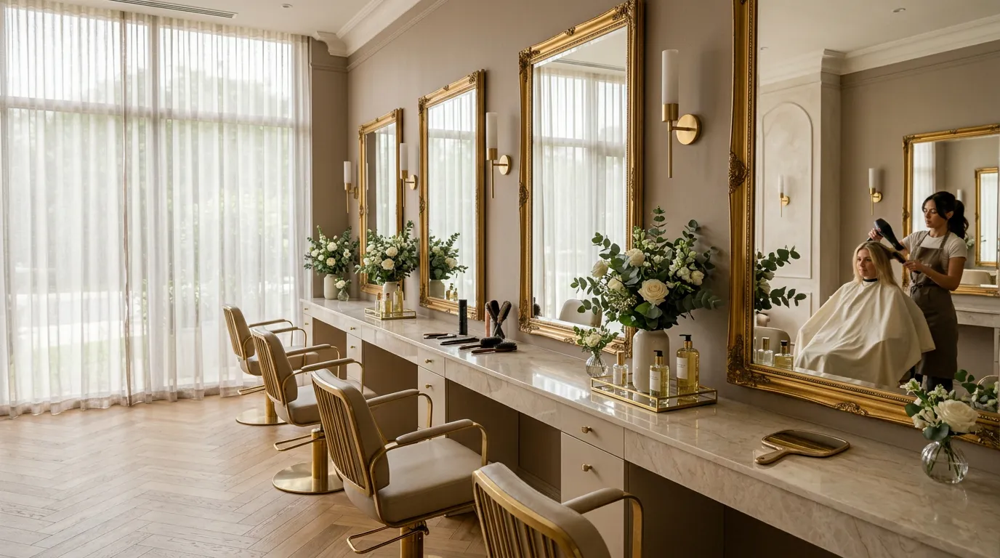
Our Philosophy
머리카락은
살아 있는 소재입니다
메종 드 쉐르는 자연에서 답을 찾습니다.
식물 유래 성분과 비건 포뮬러로
두피부터 모발 끝까지 건강하게 가꿉니다.
97%
Natural Ingredients
12+
Years of Expertise
1:1
Personal Consulting
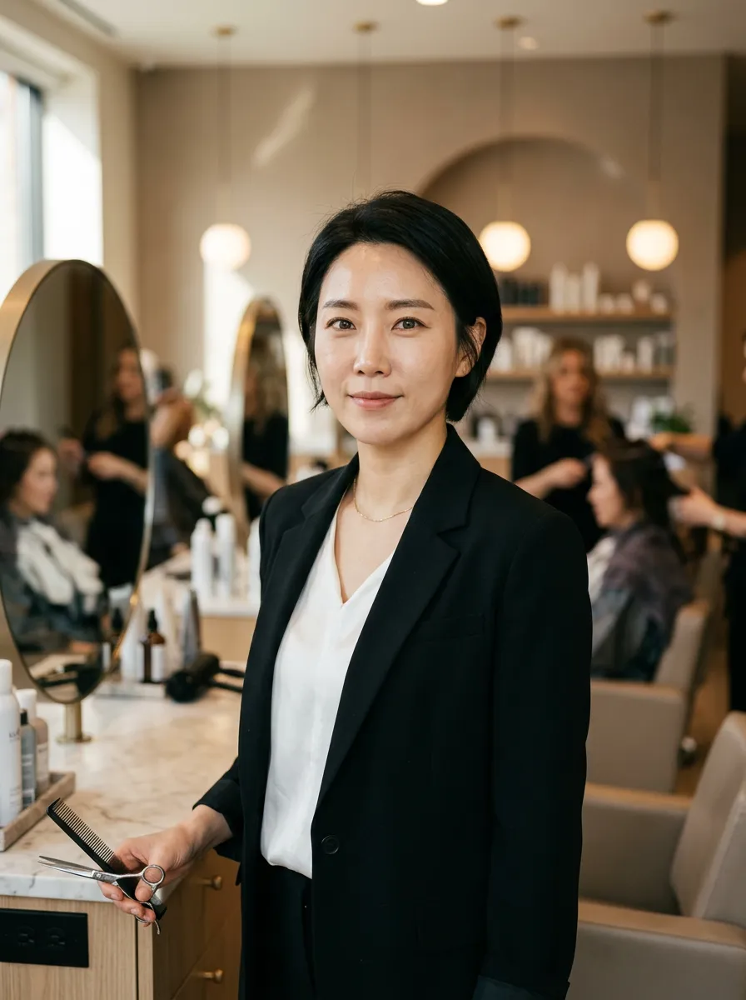
김소연
Creative Director · 15년
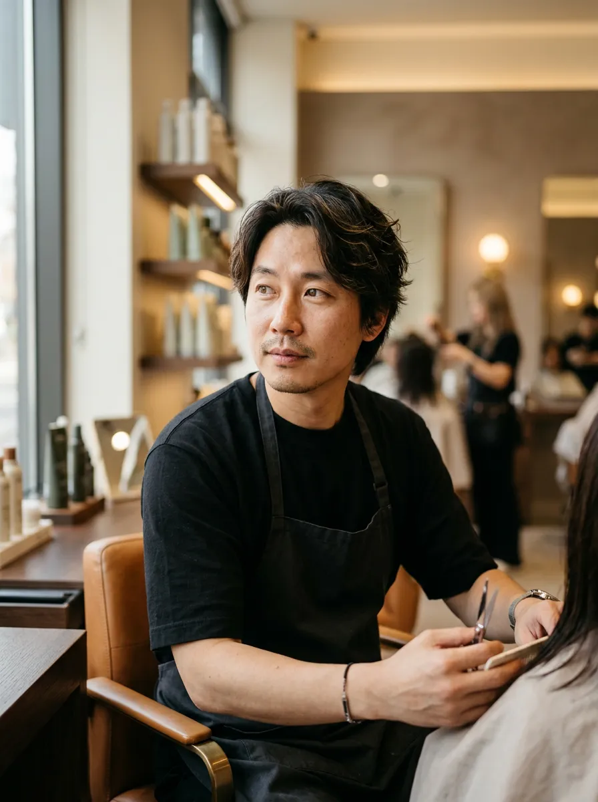
박지원
Color Specialist · 10년
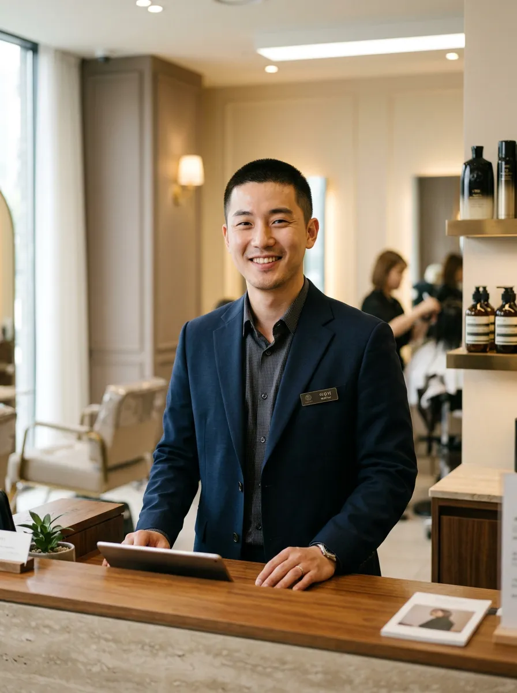
이민지
Care Expert · 8년
Our Stylists
손끝에 담긴
12년의 철학
각 스타일리스트가 전문 분야에서
쌓아온 감각과 기술로
당신에게 가장 어울리는 스타일을 제안합니다.
- 일본 Milbon · 프랑스 L'Oréal 공인 교육 수료
- 매 시즌 해외 트렌드 리서치 참여
- 고객 재방문율 89% (2024 기준)
Services
자연 성분 기반의
맞춤 케어 서비스
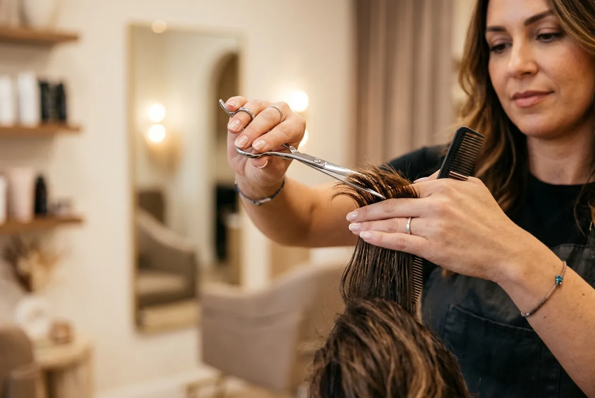
Cut & Style Design
얼굴형과 라이프스타일을 분석한
1:1 맞춤 커트와 스타일링.
₩60,000 — ₩90,000
Color Design
비건 염모제와 식물 추출물로
두피 자극 없는 프리미엄 컬러링.
₩120,000 — ₩200,000
Scalp Treatment
두피 진단 후 맞춤 처방하는
식물 유래 스칼프 트리트먼트.
₩80,000+
Season Collection
2025 Spring
Botanical Hair
Warm Copper
자연광 아래 빛나는 구리빛 웜톤
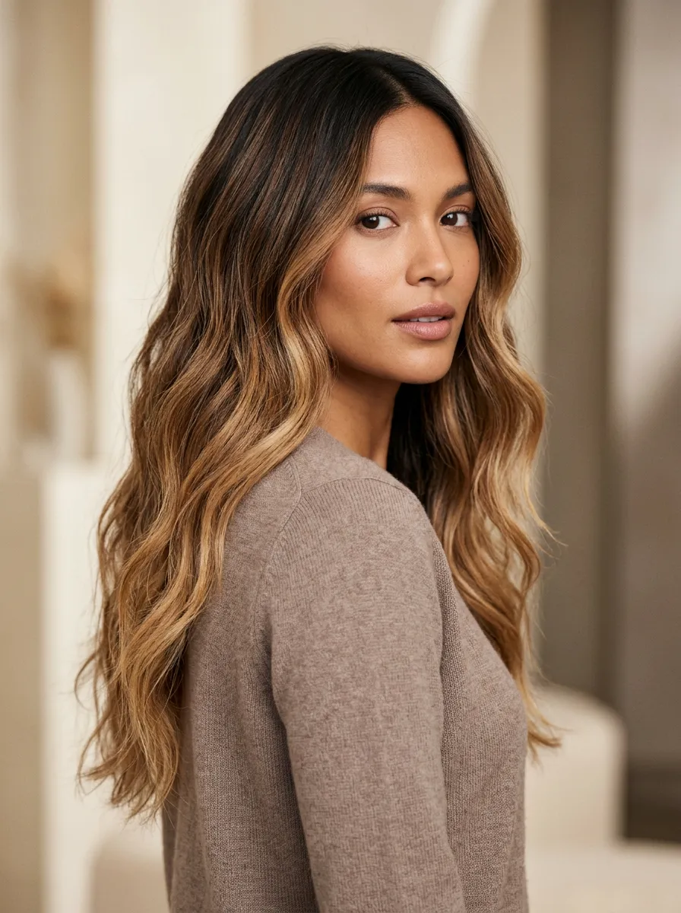
Olive Ash
차분한 올리브 애쉬 브라운
Honey Beige
부드러운 허니 베이지 하이라이트
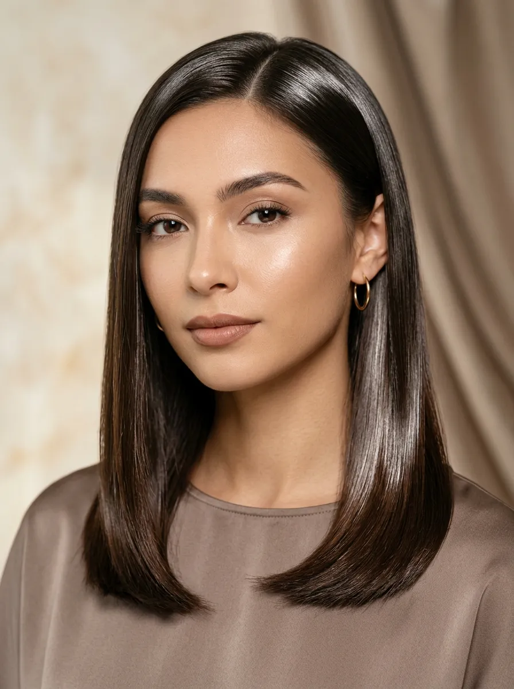
Rose Gold
로즈 골드 발레아쥬
"아름다움은 자연에서 시작되고,
당신에게서 완성됩니다."
지금 예약하기
Before & After
변화의 순간을
기록합니다
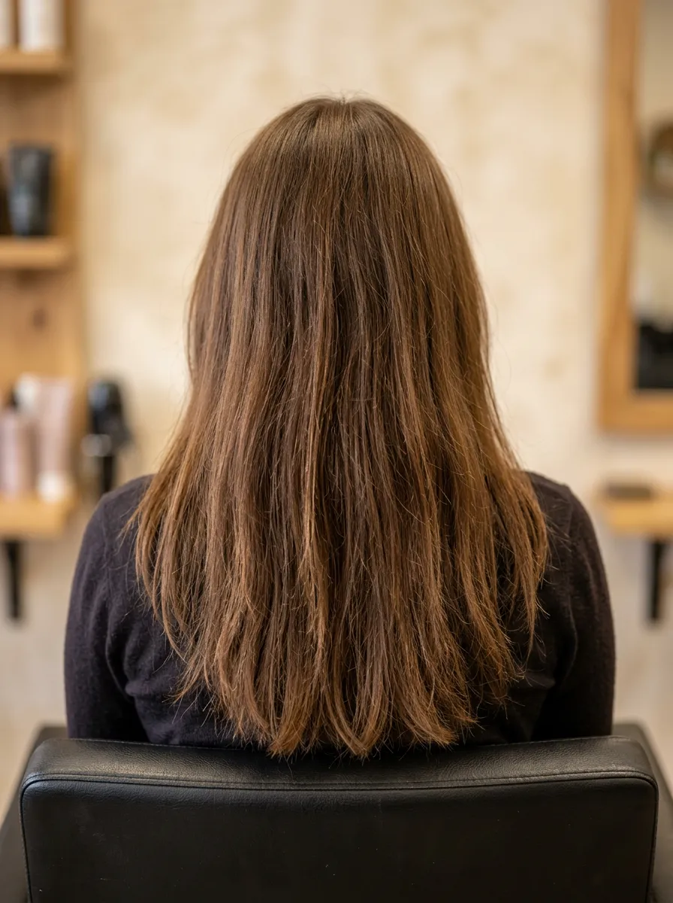
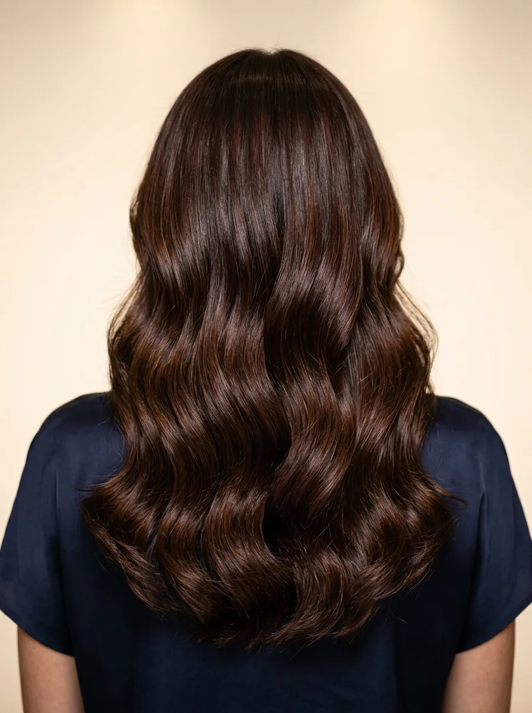
Hover to reveal — 손상된 모발에서 건강한 윤기로
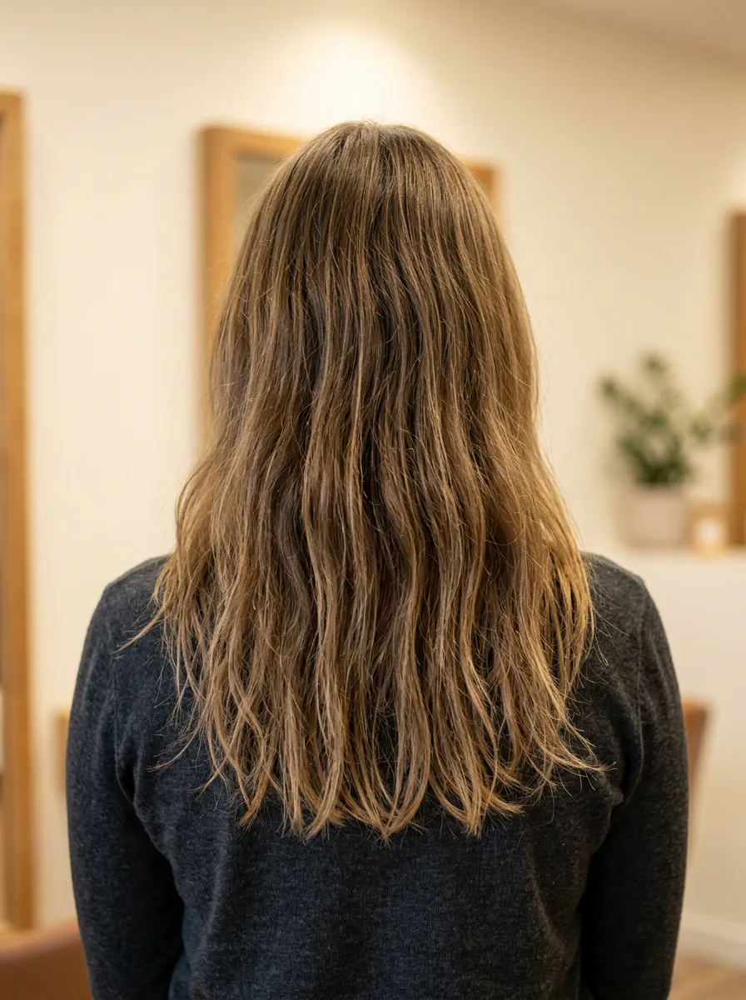
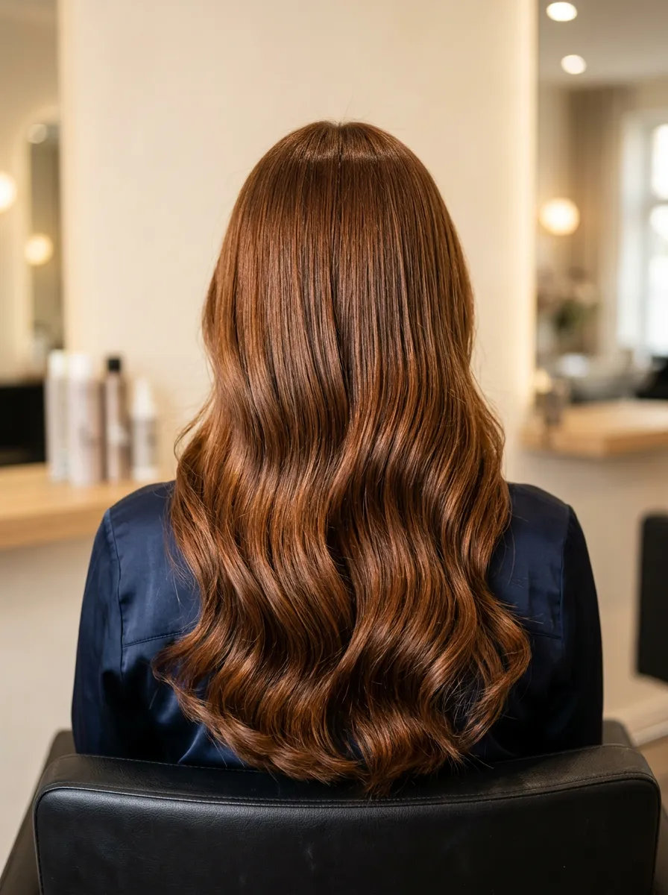
"처음으로 염색 후에도
— 김수진 님, 2024년 겨울
머릿결이 오히려 좋아졌어요."
자연 유래 시술의 차이
일반 화학 시술 대비 두피 자극이 80% 감소합니다.
식물성 단백질이 모발 내부를 채워 시술 후에도 탄력을 유지합니다.
80%
두피 자극 감소
3x
컬러 유지력 향상
Our Space
쉼이 있는 공간,
변화가 시작되는 곳
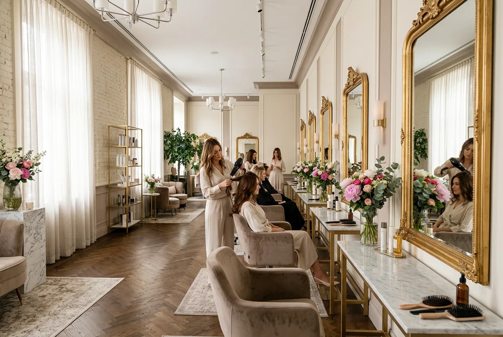
Private Styling Booth
독립된 프라이빗 부스에서
오롯이 나만의 시간을 보낼 수 있습니다.
자연광이 들어오는 창가 좌석은
가장 정확한 컬러 확인이 가능합니다.
Botanical Garden Lounge
대기 공간은 식물로 가득한
보태니컬 라운지로 꾸며져 있습니다.
유기농 허브티와 함께
시술 전 편안한 컨설팅을 진행합니다.
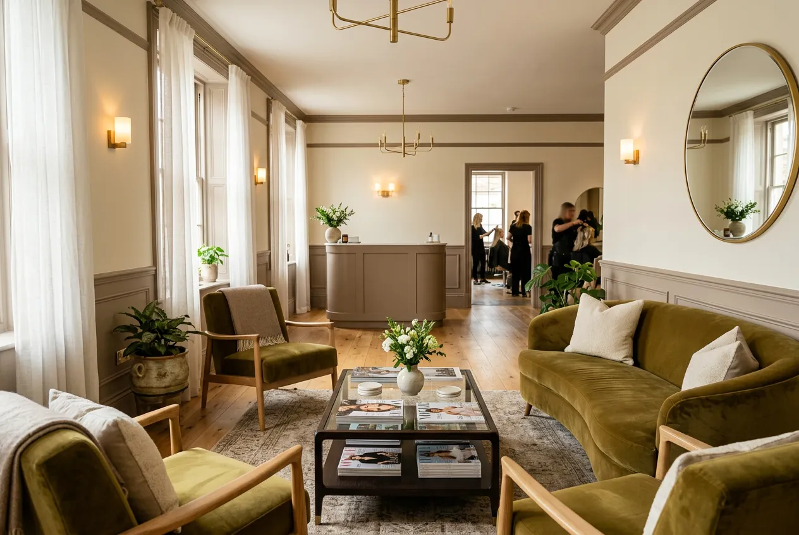
Reviews
고객님의 이야기
"민감성 두피라 항상 염색이 걱정이었는데,
비건 염모제로 시술받고 나서는
두피 트러블이 전혀 없었어요."
이하은 님
Color Design · 2024.11
"소연 원장님이 제 얼굴형에 맞는
커트를 제안해주셨는데,
주변에서 분위기 달라졌다는
말을 정말 많이 들었어요."
박서영 님
Cut & Style · 2024.09
"두피 트리트먼트 3회차인데
확실히 머릿결이 달라지는 게 느껴져요.
자연 성분이라 안심이 됩니다."
정다은 님
Scalp Treatment · 2025.01
"인테리어도 너무 예쁘고
허브티까지 내어주시는 센스!
힐링하러 오는 기분이에요."
최윤서 님
Cut & Style + Treatment · 2024.12
"남자인데 처음으로
헤어 컨설팅을 받아봤어요.
제 두상에 맞는 스타일을
정확히 짚어주셔서 감동이었습니다."
오준혁 님
Cut & Style · 2025.02
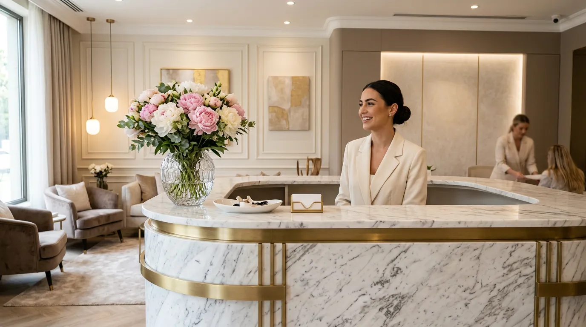